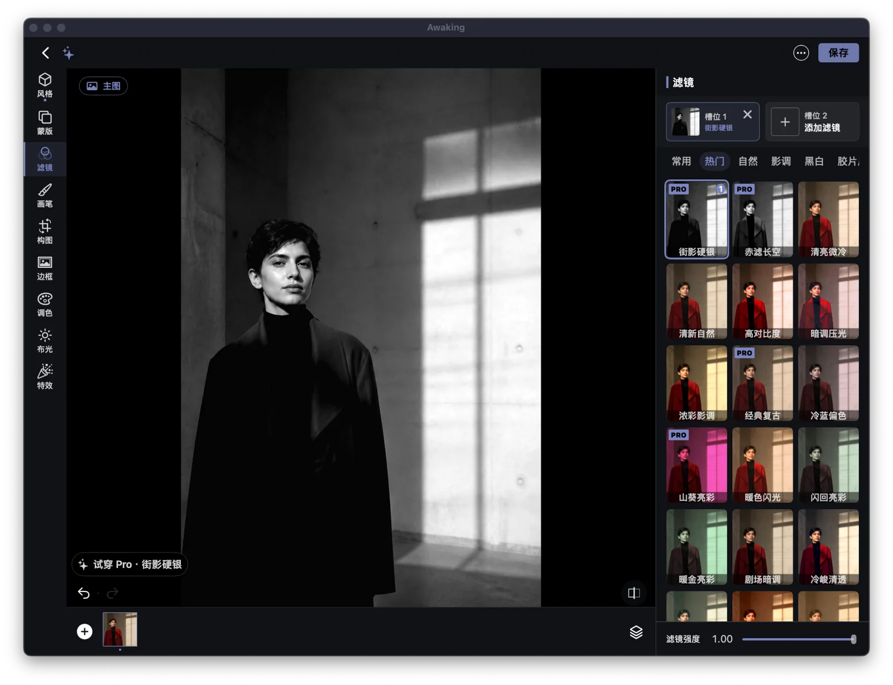
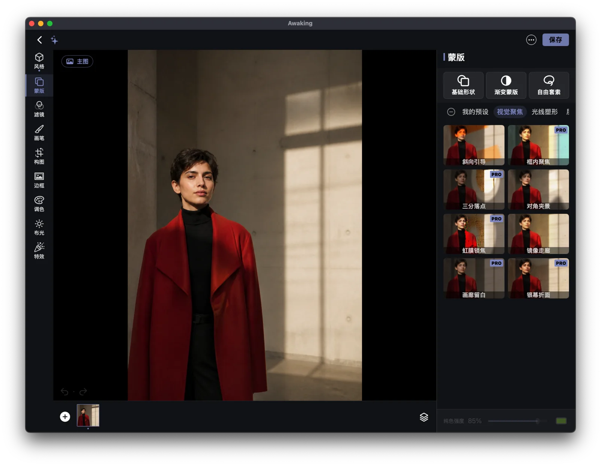
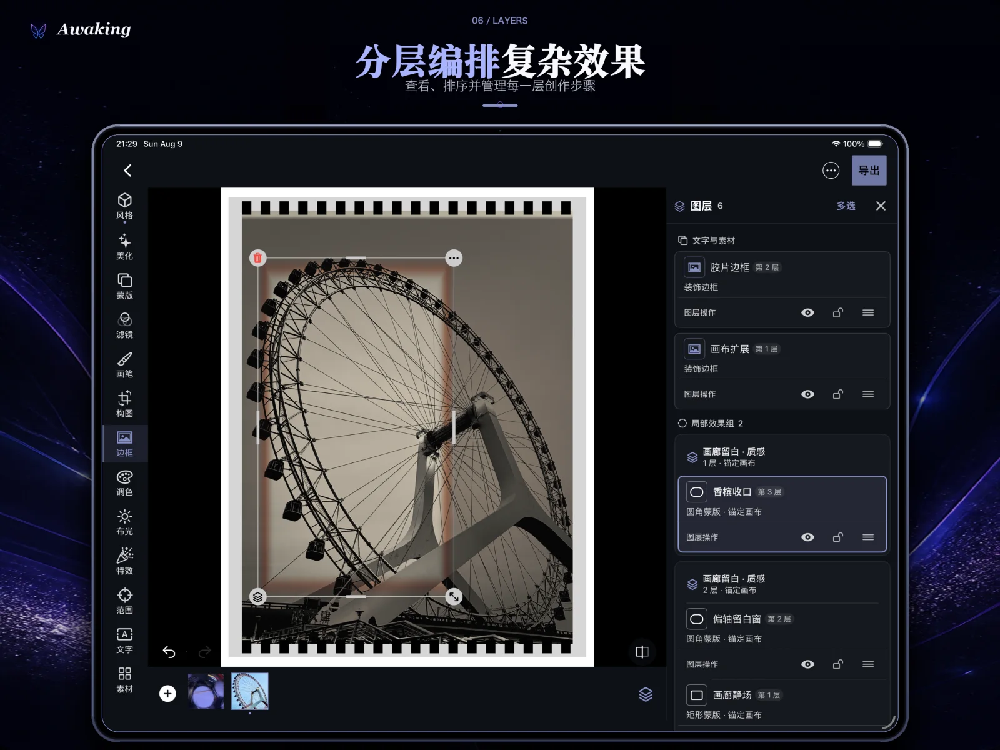

Filter
先定整体风格。
叠加滤镜并分别调整强度，从光影、色彩和质感建立画面的第一印象。
影像先被看见
人像、建筑、旅行和日常，各自需要不同的光、色彩与重点。Awaking 把选择留给你。


一次完整编辑
先找到画面的气质，再把变化放到真正需要的位置。图层让复杂调整仍然清楚、可继续。

Filter
叠加滤镜并分别调整强度，从光影、色彩和质感建立画面的第一印象。

Mask
使用形状、渐变与自由套索蒙版控制局部，并通过画笔完成更细的处理。

Layers
查看、整理并继续编辑多个调整，让复杂的作品也能保持清楚。
从开始到完成
从设备选择照片，在本地开始编辑。
用滤镜、调色、构图、布光和特效找到方向。
通过蒙版与画笔，把注意力放到需要的位置。
检查图层、继续调整，再把作品保存到本地。
Free & Pro
无需账号即可导入照片、完成基础编辑、撤销重做，并保存无水印标准 JPEG。
解锁精选高级滤镜、蒙版模板、特效与高质量导出。商品与价格以 Apple 购买页为准。